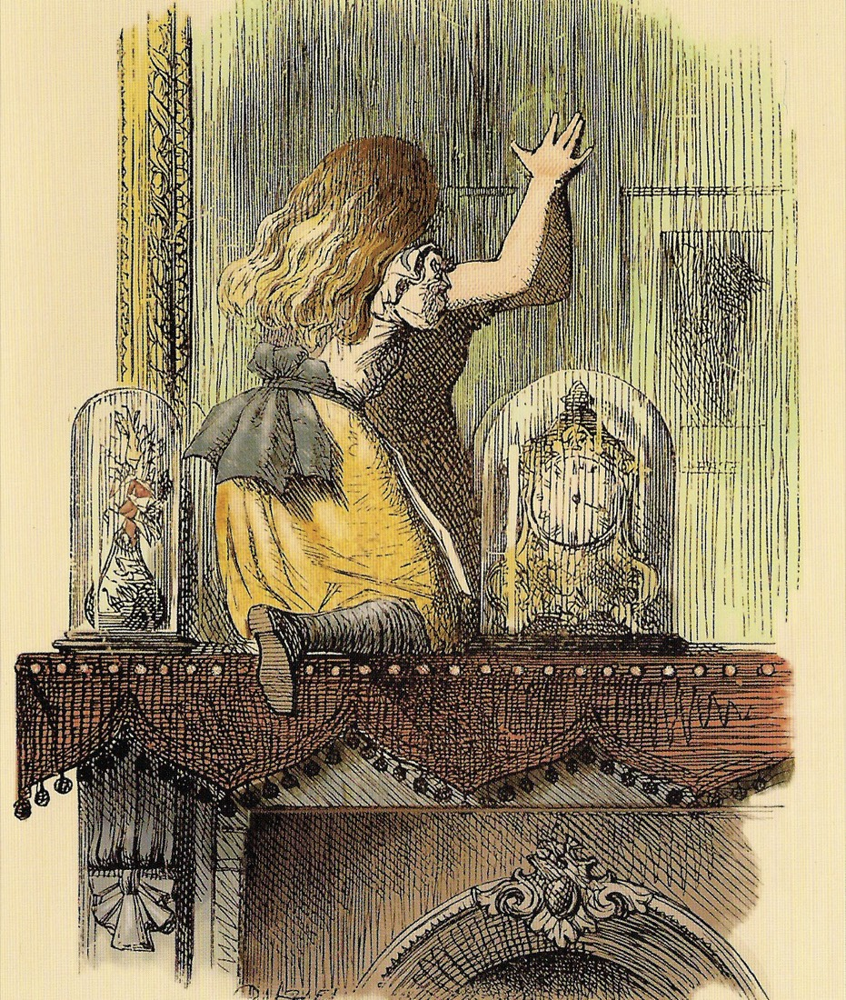
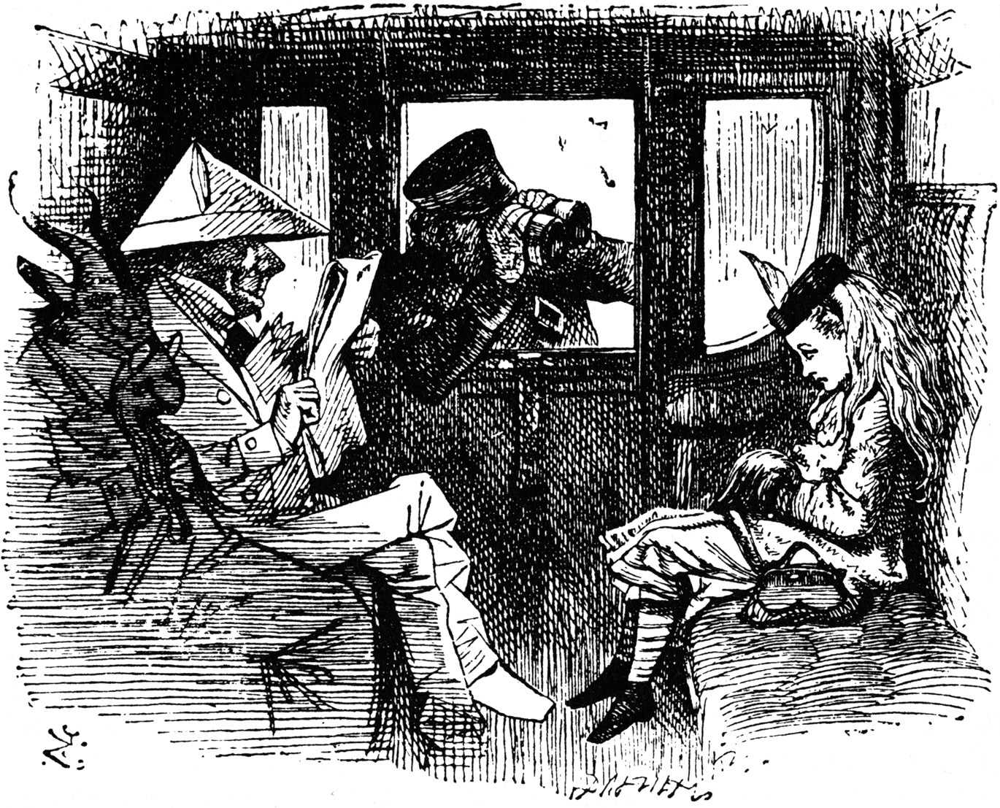
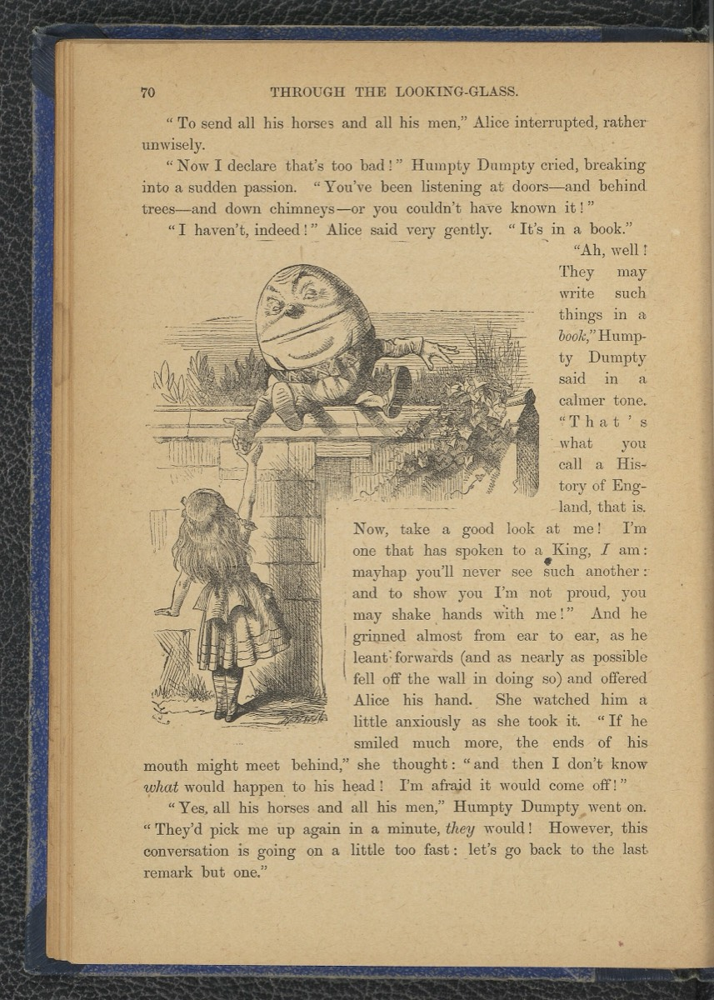
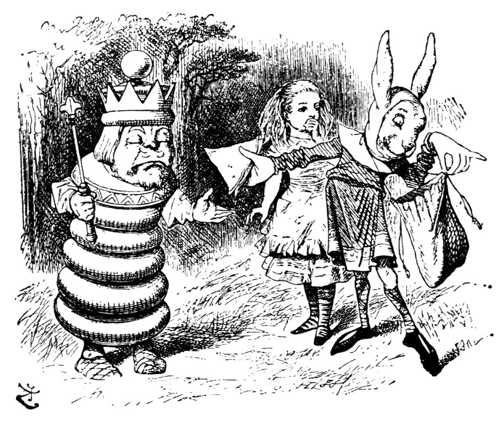

A hair salon in Sterling, VA. Color, cuts, keratin smoothing and extensions.
Your visit, in three steps
Consult
New guests start with a $0, 15 minute consultation to talk through what suits their hair.
Create
Cut, color, highlights, balayage or smoothing, with a gloss included on most color services.
Glow
Leave with a finished style, then book your next visit in a few taps.

What we do
Color and highlightsBalayage, partial and full highlights, all-over color and gloss. Cuts and stylingWomen's, men's and children's cuts, blow dry and style. Smoothing treatmentsFormaldehyde-free keratin treatments, including blonde formulas. ExtensionsTape-in and sew-in installs, move ups and removals.

